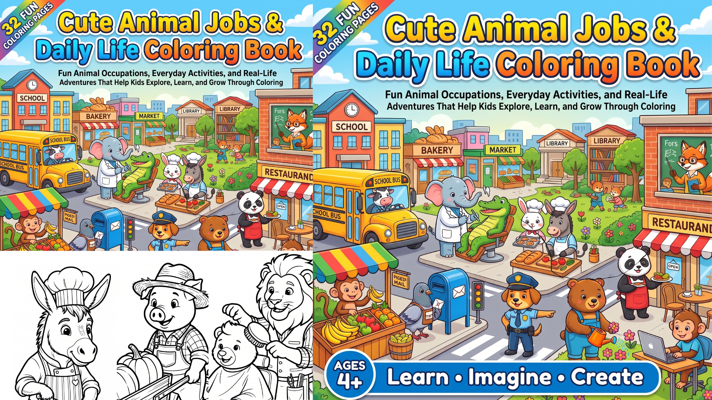

Cute Animal Jobs &
Daily Life Coloring Book
Fun Animal Occupations, Everyday Activities, and Real-Life Adventures That Help Kids Explore, Learn, and Grow Through Coloring
A baker, a barber, a farmer, a movie director. Kids color cute animals doing the real jobs and daily routines they see around them, and begin to understand how the world works.
- ⚡ Instant download
- 🖨️ Print again and again
- 🎨 Any crayons work
Color a job → understand a job → dream about their own
See it in action
A short ad showing the pages, the animal workers and how children understand reality through coloring.

What your child gains
Kids learn best by playing. Every page connects a happy cartoon animal to something real: a job, a tool, a skill, a family moment.
Understand real life
Bakers knead dough, farmers plant seeds, drivers deliver. Children see where food, homes and services come from.
Discover jobs
From barber to movie director, kids meet many kinds of work and learn that every job helps someone.
Creativity unlocked
Open scenes invite free choices of color and detail. There are no wrong answers.
Focus and fine motor skills
Screen-free quiet time that builds attention span and steady hand control.
Words and conversation
Tools, foods and actions give new vocabulary. Ask “What is the cat making?” and listen to the story.
Family together time
Birthdays, outings and shared meals show warm everyday moments worth coloring together.
Before and after the book
Children ask “What do people do all day?” Colored pages turn that curiosity into understanding.
Before
- Hours of passive screen time
- Jobs and daily routines feel far away
- Short attention, quick frustration
- Few words for tools, foods and work
- Parents hunting for a useful activity
After
- Screen-free, creative quiet time
- Kids explain what a baker or farmer does
- Longer focus and proud finished pages
- New vocabulary and big imagination
- A ready stack of learning activities
What’s inside
Bold, friendly outlines of animals at work and at home, grouped by the part of life they show.
Kitchen & food 8 pages
- 🐴Horse chopping tomatoes on a table
- 🐱Cat frying food in a pan
- 🐻Bear roasting a juicy steak
- 🐗Boar making a birthday cake
- 🐈Cat pressing dough with a wooden roller to bake bread
- 🐭Mouse making a burger
- 🐱Cat serving coffee at a cafe
- 🦊Fox making noodles
Farm & garden 8 pages
- 🐐Goat trimming leaves on a tree
- 🐐Goat picking up carrots
- 🐗Boar pushing a trolley of pumpkins
- 🐰Rabbit watering the flowers
- 🦆Duck planting seeds
- 🐴Horse carrying a basket of carrots and tomatoes
- 🐄Cow driving a tractor
- 🐱Cat placing flowers in a vase
Market & shops 6 pages
- 🐒Monkey selling bananas
- 🐓Rooster selling boiled eggs from a basket
- Donkey selling farm vegetables
- 🐒Monkey selling fresh organic food
- 🦌Deer selling ice cream
- 🐶Dog delivering a fragile package
Builders & helpers 5 pages
- 🐱Cat building a wooden chair
- 🐶Dog building a house
- 🦌Deer directing a movie
- 🐻Bear catching fish with a fishing rod
- 🦁Lion giving a haircut at the barber shop
Family & fun 2 pages
- 🐻Bear celebrating a birthday with family
- 🐰Rabbit going out with family
Ready in three steps
Download
Buy once and get the PDF instantly.
Use any home printer on regular paper. Reprint favorites anytime.
Color and talk
Color together and ask, “What job is this animal doing? What would you like to be?”
More books from the shelf
New creativity and learning books land here as they are released.
Questions parents ask
What do I receive after buying?
An instant digital download of the printable 32-page coloring book. Print as many copies as you need for your own family or classroom.
What ages is it for?
Ages 4 and up. Bold outlines suit younger children, and busy scenes give older kids more to color.
Do I need special supplies?
No. Crayons, colored pencils or washable markers all work on standard printer paper.
Is it a physical book?
No, it is a digital PDF you print at home, so there is no shipping wait.
Let your child color the real world
One download. Dozens of cute animal jobs that make daily life easy to understand.
Get Cute Animal Jobs & Daily Life